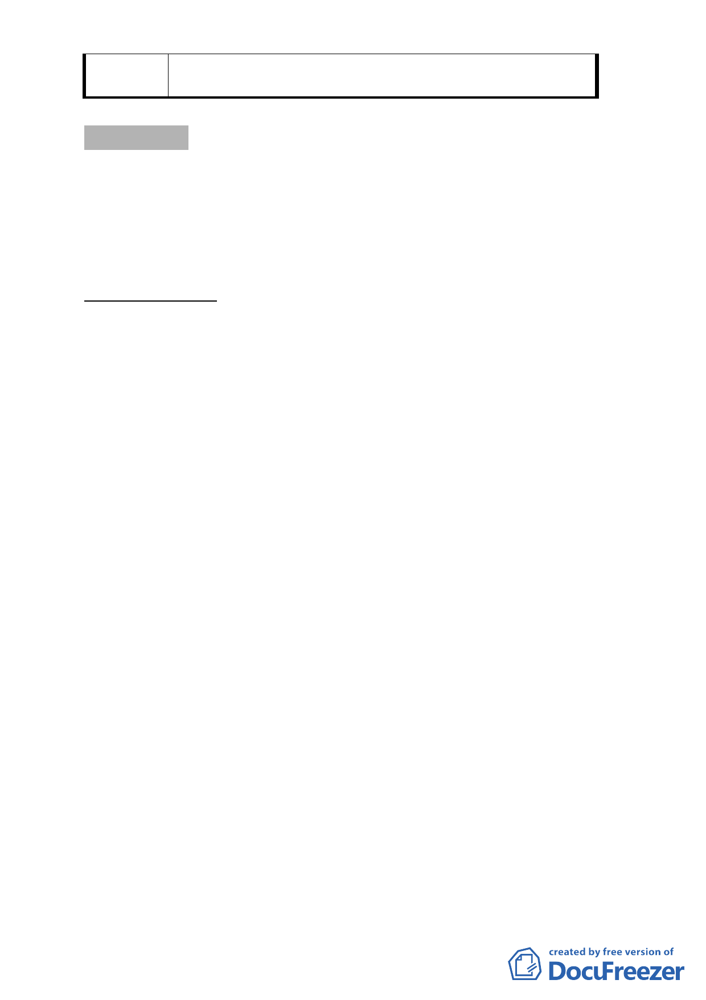

委
決
員
會
議
同編號1。
審議事項 二
案名：「變更臺北市萬華區福星段一小段240（部分）及256-4地
號等2筆土地文教區為住宅區主要計畫案」及「擬定臺北市
萬華區福星段一小段240（部分）地號等2筆土地第四種住
宅區(特)細部計畫案」
案情概要說明：
一、計畫緣起：
有鑑於高度發展都市均面臨住宅市場供需不均問題，使中低
所得者無法仰賴民間住宅租賃市場滿足居住需求，本府除配
合中央政策提供弱勢市民租金及購屋貸款利息補貼，同時也
提供出租國民住宅及平價住宅供本市弱勢民眾租住與借住，
惟供給數量與國際先進城市相較仍有不足，故本府近年積極
推動公營住宅興建計畫，於本市區位適當之公有土地興建公
營住宅，改以出租住宅之方式滿足市民居住需求及保障其居
住權利。
本計畫區原為中興國小校地範圍，為配合本市每一行政區設
置一運動健康休閒中心之政策，於93年整併原中興國小及福
星國小，並於96年將原中興國小校地北側部份供萬華區市民
運動中心使用，南側校舍另於98年拆除並施作簡易綠美化迄
今。
本府為配合內政部「社會住宅中長期實施方案」優先將轄內
閒置校園或公有閒置建物作為社會住宅及本市公營住宅，依
據都市計畫法相關規定於未逾環境承載力前提下，將原中興
國小南側暫無其他利用計畫之校地重新規劃檢討變更為住宅
區，除活化利用市有閒置土地，增加本市公營住宅存量及租
屋供給，同時也為落實行政院「整體住宅政策」及本市公營
- 71 -